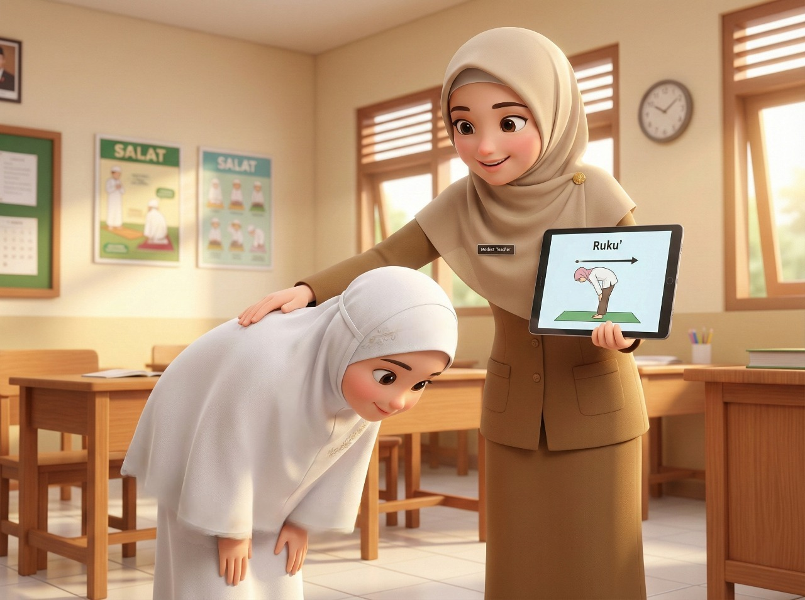

Pendidikan di Indonesia saat ini sedang bergerak menuju peningkatan mutu yang menyeluruh, di mana kurikulum dan pendekatan pembelajaran beradaptasi untuk menciptakan pengalaman belajar yang bermakna. Salah satu perubahan fundamental terletak pada cara pandang terhadap evaluasi hasil belajar, yang tidak lagi sekadar mengejar angka, melainkan memastikan siswa mengalami proses deep learning atau pembelajaran mendalam. Dalam paradigma ini, asesmen terbagi menjadi tiga fungsi vital: assessment as learning, assessment for learning, dan assessment of learning, yang memadukan pendekatan formatif dan sumatif secara proporsional.
Ketiga jenis asesmen ini memiliki peran strategis dalam mendukung siklus pembelajaran mendalam yang terdiri dari tahap memahami, mengaplikasi, dan merefleksi. Penerapan ketiga asesmen ini sangat relevan jika diterapkan pada materi konkret seperti tata cara Salat bagi siswa kelas 3 SD. Pada usia ini, secara psikologis anak berada pada tahap operasional konkret, di mana mereka membutuhkan contoh nyata dan keterlibatan fisik langsung. Selain itu, aspek sosial mereka mulai berkembang melalui interaksi dengan teman sebaya, sehingga validasi dan umpan balik menjadi elemen krusial dalam pembentukan kepercayaan diri mereka.
Assessment as learning merupakan jenis asesmen formatif yang berfungsi sebagai sarana refleksi bagi siswa. Tujuannya adalah membangun kemandirian dan kesadaran diri (metakognisi) siswa terhadap proses belajarnya sendiri. Dalam pendekatan pembelajaran mendalam, fase ini sangat erat kaitannya dengan tahap "merefleksi", di mana siswa diajak untuk mengevaluasi dan memaknai praktik nyata yang telah mereka lakukan. Siswa tidak hanya menerima nilai dari guru, tetapi aktif memantau kemajuan mereka sendiri.
Studi kasus penerapan assessment as learning pada materi Salat kelas 3 SD dapat dilakukan melalui penggunaan "Jurnal Aku Anak Sholeh". Guru menyediakan lembar ceklis sederhana yang berisi urutan bacaan dan gerakan Salat yang menarik secara visual. Setelah berlatih, siswa diminta untuk menilai diri sendiri (self-assessment): "Apakah aku sudah membaca Iftitah?", "Apakah punggungku lurus saat rukuk?". Aktivitas ini mempertimbangkan psikologis anak yang menyukai pencapaian bertahap, sekaligus melatih kejujuran dan tanggung jawab spiritual tanpa rasa takut dinilai salah oleh orang lain.
Selanjutnya adalah assessment for learning, yang juga termasuk dalam kategori asesmen formatif namun berfokus pada perbaikan proses pembelajaran saat kegiatan berlangsung. Asesmen ini memberikan umpan balik (feedback) seketika yang konstruktif untuk membantu siswa mencapai kompetensi yang diharapkan. Dalam konteks sosial kelas 3 SD, asesmen ini bisa melibatkan interaksi antar-teman atau bimbingan langsung guru yang bersifat mengayomi, bukan menghakimi.
Dalam praktik materi Salat, assessment for learning dapat diwujudkan melalui metode observasi dan tutor sebaya. Guru dapat berkeliling saat siswa mempraktikkan gerakan Salat, memberikan koreksi lembut pada posisi sujud yang kurang tepat, atau membenarkan pelafalan bacaan. Secara sosial, siswa dapat dipasangkan untuk saling mengamati gerakan teman (peer assessment), yang membangun kolaborasi dan empati. Pendekatan ini selaras dengan prinsip pembelajaran mendalam pada tahap "mengaplikasi", di mana siswa mempraktikkan pemahaman mereka dalam konteks nyata dan mendapatkan masukan untuk penyempurnaan.

Berbeda dengan dua jenis sebelumnya, assessment of learning adalah asesmen sumatif yang dilakukan di akhir proses pembelajaran untuk mengukur capaian kompetensi siswa. Meskipun bersifat penilaian akhir, dalam kurikulum yang berpusat pada siswa, asesmen ini harus tetap bersifat autentik dan holistik. Autentik berarti penilaian merepresentasikan konteks kehidupan nyata, sedangkan holistik berarti melihat kemampuan siswa secara utuh meliputi pengetahuan, keterampilan, dan sikap.
Pada studi kasus Salat kelas 3 SD, assessment of learning tidak cukup hanya dengan tes tertulis pilihan ganda mengenai rukun Salat. Penilaian sumatif yang tepat dapat berupa ujian praktik demonstrasi Salat secara lengkap atau penilaian berbasis kinerja (performance test). Guru menilai ketepatan gerakan (keterampilan), kebenaran bacaan (pengetahuan), serta kekhusyukan dan ketertiban (sikap) sebagai satu kesatuan. Hal ini memastikan bahwa laporan hasil belajar benar-benar mencerminkan kompetensi murid secara komprehensif.
Integrasi ketiga asesmen ini sangat krusial karena pembelajaran mendalam menuntut siswa tidak hanya menghafal, tetapi mengonstruksi pengetahuan secara aktif. Dengan assessment as learning, siswa kelas 3 SD belajar merefleksikan ibadah mereka. Dengan assessment for learning, mereka belajar memperbaiki kesalahan melalui interaksi sosial yang positif. Terakhir, assessment of learning memberikan gambaran utuh tentang kesiapan mereka dalam menjalankan kewajiban ibadah yang sesungguhnya.
Pendekatan ini juga mengakomodasi kebutuhan emosional siswa yang membutuhkan suasana belajar yang aman, nyaman, dan saling memuliakan. Ketika evaluasi tidak lagi menjadi momok yang menakutkan tetapi menjadi bagian dari perjalanan belajar yang menyenangkan, motivasi intrinsik siswa untuk mendirikan Salat akan tumbuh lebih kuat. Siswa tidak sekadar melakukan gerakan karena takut nilai jelek, tetapi karena kesadaran yang terbangun dari proses refleksi dan perbaikan yang berkelanjutan.
Penerapan strategi ini pada akhirnya mendukung tujuan besar pendidikan nasional untuk membangun manusia yang beriman, bertakwa kepada Tuhan Yang Maha Esa, dan berakhlak mulia. Asesmen bukan lagi sekadar alat administrasi pengisian rapor, melainkan instrumen pedagogis yang ampuh untuk menanamkan nilai-nilai karakter. Melalui kombinasi asesmen formatif dan sumatif yang tepat, guru dapat memfasilitasi pertumbuhan spiritual dan intelektual siswa secara seimbang.
Sebagai penutup, transformasi menuju pembelajaran mendalam menuntut guru untuk mengubah pola pikir bahwa mengajar bukan sekadar menyampaikan materi hingga tuntas, melainkan memastikan kompetensi tercapai. Sinergi antara assessment as learning, for learning, dan of learning pada materi Salat kelas 3 SD adalah bukti nyata bagaimana kebijakan kurikulum dapat diterjemahkan menjadi praktik kelas yang humanis, bermakna, dan sesuai dengan perkembangan psikologis serta sosial peserta didik.
Tulisan ini adalah AI Generated dengan sedikit perubahan.